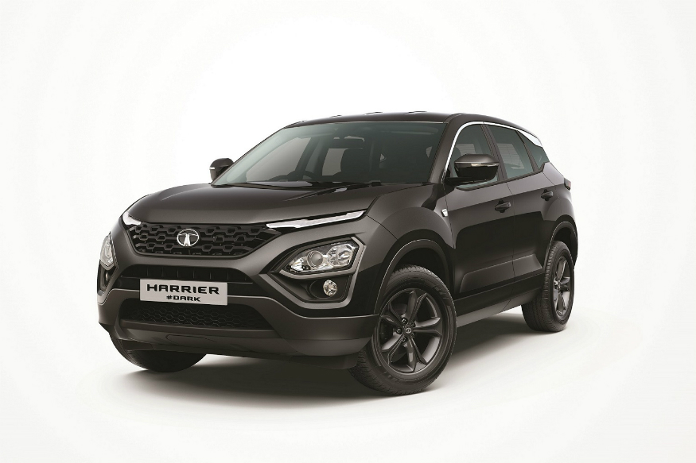
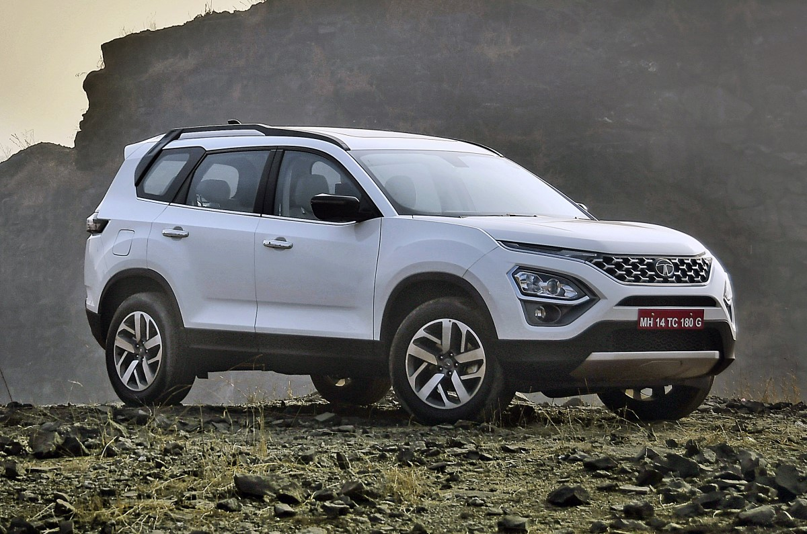
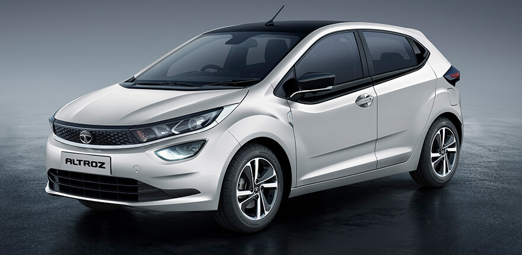
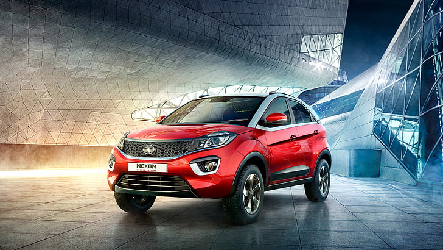

About Us
Part of the USD128 billion Tata group founded by Jamsetji Tata in 1868, Tata Motors is among the world’s leading manufacturers of automobiles. We believe in ‘Connecting aspirations’, by offering innovative mobility solutions that are in line with customers' aspirations. We are India's largest automobile manufacturer, and we continue to take the lead in shaping the Indian commercial vehicle landscape, with the introduction of leading-edge powertrains and electric solutions packaged for power performances and user comfort at the lowest life-cycle costs. Our new passenger cars and utility vehicles are based on Impact Design and offer a superior blend of performance, driveability and connectivity. Our focus on connecting aspirations and our pipeline of tech-enabled products keeps us at the forefront of the market. We have identified six key mobility drivers that will lead us into the future – modular architecture, complexity reduction in manufacturing, connected & autonomous vehicles, clean drivelines, shared mobility, and low total cost of ownership.

Ratan Naval Tata (born 28 December 1937) is an Indian industrialist, philanthropist and former chairman of Tata Sons. He was a chairman of the Tata Group from 1990 to 2012, and interim chairman from October 2016 through February 2017. He continues to head its charitable trusts.[2][3] In 2008, he received the Padma Vibhushan, the second highest civilian honour in India, after receiving the Padma Bhushan, the third highest civilian honour in 2000.[4] He is the son of Naval Tata, who was adopted by Ratanji Tata, son of Jamsetji Tata, the founder of the Tata Group. He graduated from the Cornell University College of Architecture with a bachelor's degree in architecture.[5] He joined Tata in 1961, where he worked on the shop floor of Tata Steel. He later succeeded J. R. D. Tata's as chairman of Tata Sons upon the latter's retirement in 1991.
CARS
Trucks
Mini Trucks
Testimonial
Stringent Emission norms, inclusion of various alternate fuels and transition towards net zero emission along with vehicular safety are key focus areas for automobile manufacturers around the world. Infrastructure being an integral part of the country's economic ecosystem, is further likely to grow manifold in coming years. Highways are an important part of the country's infrastructure and have an immense impact of its growth and development

India has the second-largest road network in the world, spanning a total of ~60 lakh kilometres, and caters to heavy volumes of traffic movement, comprising a wide array of both passenger and commercial vehicles. Against this backdrop, a systematic approach towards ascertaining safety is the need of the hour, with effective collaboration amongst all stakeholders.
The government has taken several meaningful regulatory measures towards ensuring road safety, and automakers too are striving to fortify their efforts in this regard. While passive safety features that ensure protection during an accident, such as seatbelts or airbags, have been conventionally prevalent, today.